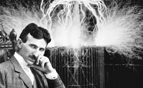

Memorials
- The Nikola Tesla Memorial Centre in Smiljan, Croatia, opened in 2006. It features a statue of Tesla designed by sculptor Mile Blažević.
- A plaque depicting a relief of Nikola Tesla is present on the Old City Hall in Zagreb, Croatia's capital, commemorating his proposal to build an alternating current power station, which he made to the city council. The plaque quotes Tesla's statement, given in the building on 24 May 1892, which reads: "As a son of this country, I consider it my duty to help the City of Zagreb in every way, either through counsel or through action" (Croatian:"Smatram svojom dužnošću da kao rođeni sin svoje zemlje pomognem gradu Zagrebu u svakom pogledu savjetom i činom").
- On 7 July 2006, on the corner of Masarykova and Preradovićeva streets in the Lower Town area in Zagreb, a monument of Tesla was unveiled. This monument was designed by Ivan Meštrović in 1952 and was transferred from the Zagreb-based Ruđer Bošković Institute where it had spent previous decades.
- A monument to Tesla was established at Niagara Falls, New York. This monument portraying Tesla reading a set of notes was sculpted by Frano Kršinić. It was presented to the United States by Yugoslavia in 1976 and is an identical copy of the monument standing in front of the University of Belgrade Faculty of Electrical Engineering.
- A monument of Tesla standing on a portion of an alternator was established at Queen Victoria Park in Niagara Falls, Ontario, Canada. The monument was officially unveiled on 9 July 2006 on the 150th anniversary of Tesla's birth. The monument was sponsored by St. George Serbian Church, Niagara Falls, and designed by Les Drysdale of Hamilton, Ontario. Drysdale's design was the winning design from an international competition.

- A monument of Tesla was unveiled in Baku in 2013. Presidents Ilham Aliyev and Tomislav Nikolić attended a ceremony of unveiling
- In 2012 Jane Alcorn, president of the nonprofit group Tesla Science Center at Wardenclyffe, and Matthew Inman, creator of web cartoon The Oatmeal, raised a total of $2,220,511 – $1,370,511 from a campaign and $850,000 from a New York State grant—to buy the property where Wardenclyffe Tower once stood and eventually turn it into a museum. The group began negotiations to purchase the Long Island property from Agfa Corporation in October 2012. The purchase was completed in May 2013. The preservation effort and history of Wardenclyffe is the subject of a documentary by Tesla activist/filmmaker Joseph Sikorski called Tower to the People—Tesla's Dream at Wardenclyffe Continues
- A commemorative plaque honoring Nikola Tesla was installed on the façade of the New Yorker Hotel by the IEEE.
- An intersection named after Tesla, Nikola Tesla Corner, is located at Sixth Avenue and 40th Street, outside Bryant Park in Manhattan, New York City. The placement of the sign was due to the efforts of the Croatian Club of New York in cooperation with New York City officials, and Dr. Ljubo Vujovic of the Tesla Memorial Society of New York.
- A bust and plaque honoring Tesla is outside the Serbian Orthodox Cathedral of Saint Sava (formerly known as Trinity Chapel) at 20 West 26th Street in New York City.
- A full-size, crowdfunded statue honoring Tesla with free Wi-Fi and a time capsule (to be opened on the 100th anniversary of Tesla's death, 7 January 2043) was unveiled on 7 December 2013 in Palo Alto, California (260 Sheridan Avenue).
- Nikola Tesla Boulevard, Hamilton, Ontario.